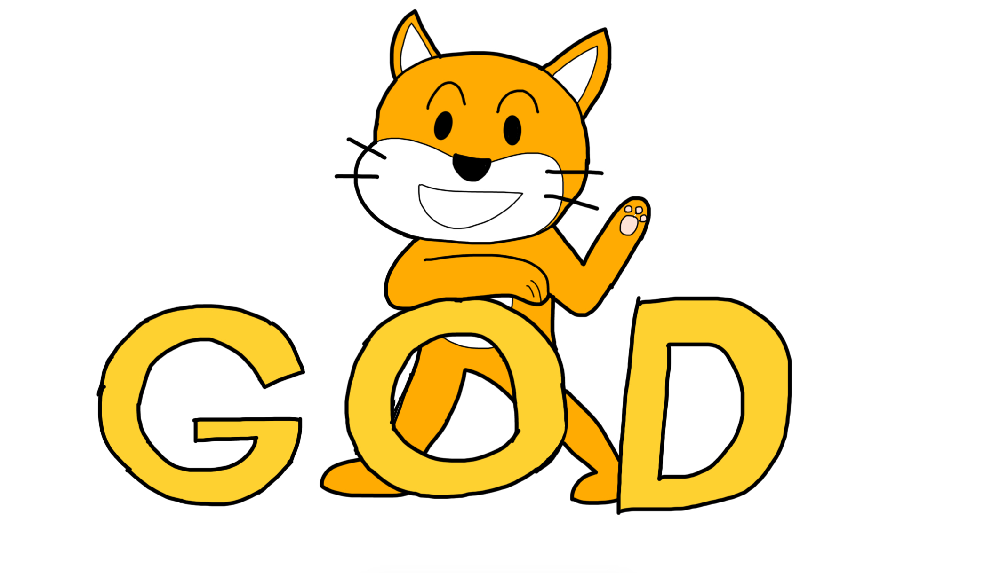

ジャンプせよ！ - Godotのチュートリアル未完走でゲームを作ってみた話 Part2

現在、最終修正中です。レイアウトが崩壊している可能性がありますが、ご了承ください。
/
/
/
/
/
/
/
/
みなさん！こんにちは！最近はブログのサムネや記事の途中で出てくる説明のための画像に、自分で描いたイラストを使っています。ゲーム制作を始めてから絵が上手くなった気がします。ブログの方ですが、SEO対策を強化しました。これでより検索上位に出やすくなったのではないでしょうか。2025/07/09の段階では「Godotのチュートリアル」と検索すると6ページ目の上から3番目に出るようになりました。今後もSEOとかOGPとか頑張っていきますので、よろしくお願いします。
~注意事項~
この記事は、「条件分岐」や「関数」など、プログラミングの基本的な概念を知っていることを前提に書かれています。
基礎的な内容にはあまり触れていないため、もしそういった知識がまだない場合は、入門向けの記事を先に読むことをおすすめします。
（今はちょっと余裕がなくて書けていませんが、今後は初心者向けの記事も投稿する予定です。お楽しみに！）
また、すでにC#をしっかり理解している方にとっては、退屈な内容に感じられるかもしれません。
ですが、初心に戻って基本の意味を改めて確認してみるのも、新しい発見につながるかもしれません。
~Day4 2025/6/26 -Jump Up GameCreator-~
はい、じゃあ今日もやっていきましょう。まずは昨日何をやったかを思い出すところから。
using Godot;
using System;
using System.Globalization;
public partial class player_magic : CharacterBody3D
{
[Export]
public float Speed = 1.0f;
[Export]
public float Grabity = 1.0f;
[Export]
public float JumpPower = 1.0f;
private Vector3 direction = Vector3.Zero;
public override void _PhysicsProcess(double delta)
{
if (Input.IsActionPressed("moveRight"))
{
direction.X += 1;
}
else
{
direction.X =
}
if (Input.IsActionPressed("moveLeft"))
{
direction.X -= 1;
}
else
{
direction.X = 0;
}
if (IsOnFloor() == true && Input.IsActionJustPressed("Jump"))
{
direction.Y = JumpPower;
}
if (IsOnFloor() == false)
{
direction.Y -= Grabity;
}
else if (IsOnFloor() == true)
{
direction.Y = 0;
}
Velocity = direction * Speed;
GD.Print(Velocity);
MoveAndSlide();
direction = Vector3.Zero;
}
}
前回の切り抜き
このコードはマイフレーム、directionを0にしています。つまり、自分の想定では上方向への力JumpPower分の力が入る、すぐに0になるというふうだと思われます。では一回、最後のコードを消してみようと思いま...
では、一番下の
direction = Vector3.Zero;
を消します。どうやって動くでしょうかね。
はい、今までみたいにジャンプしないという状況にはなりませんでした。ただ挙動がちょっとおかしくて、上に一気に上がって少しずつ落ちていくというふうになっていますが。そして左右移動をすると永遠と進み続けるやばい挙動ですね。じゃあ、修復していきましょう！
アイデア① -Xだけをリセット-
じゃあ、Xだけをリセットしましょう。
Velocity.X = 0;
構文エラー
ダメみたいですね。
アイデア② -directionをリセット-
これならどうだ！
direction = Vector3.Zero;
無駄だぜ！
ダメですね。ジャンプしてくれません。
アイデア③ -direction.Xだけリセット-
最終手段だ。これならどうだ！
direction.X = 0;
OK！無事ジャンプしてくれました。
じゃあ、次はジャンプの挙動が今は一気に上がってゆっくり落ちるっていう挙動なので、放物線を描くような挙動にしていこうと思います。
アイデア① -JumpPowerアップ！-
じゃあまずはJumpPowerを挙げてみましょう。
ダメですね。1フレームでめっちゃ高く上がっただけですね。
アイデア② -重力が強すぎた？-
じゃあ重力を弱くしてみます。
ダメですね...。上に上がったあとゆっくりと下がるだけですね。
じゃあ復習がてら一回ジャンプの仕組みを整理してみましょう。
問題！ジャンプの仕組みはどのようなふうになっていたでしょう？

上方向に力を加えた後、その力から下への力だけ小さくし続ける。
（これに似た表現または内容になっていれば正解）
現在のジャンプと重力の部分のコードを見てみましょう。
if (IsOnFloor() && Input.IsActionJustPressed("Jump"))
{
direction.Y = JumpPower;
}
if (IsOnFloor() == false)
{
direction.Y -= Grabity;
}
else if (IsOnFloor() == true)
{
direction.Y = 0;
}
一見正しく書けているように見えますが、これではダメです。ここでは、ジャンプの入力で direction.Y = JumpPower にした直後に、次の重力処理によって即座に direction.Y を減らしてしまいます。これにより、ジャンプしたつもりがその直後のフレームで重力に打ち消されるため、思ったようにジャンプができない、つまり「ジャンプ直後に急に落ちる」ように見えるのです。正しくはこうする必要があります。
if (IsOnFloor() == false)
{
direction.Y -= Grabity;
}
else if (IsOnFloor() == true)
{
direction.Y = 0;
}
if (IsOnFloor() && Input.IsActionJustPressed("Jump"))
{
direction.Y = JumpPower;
}
なぜこうすることで正しく動くかを解説します。みなさんご存知だと思いますが、プログラムには実行する順番というものがあります。コードの上の方から順に下にいくように実行していきます。つまり、先ほど修正したコードのように順番を入れ替えることで、挙動を変えることができます。先ほどのコードだと、先に重力を計算することで、ジャンプとして上への力を入れた時に重力の力ですぐに打ち消されるという現象が起こらなくなります。なので、放物線を描くようにジャンプができるようになります。

無事にジャンプを実装できました。ジャンプを実装するにあたってですが、ジャンプだけでここまで手こずるとは思ってませんでした。チュートリアルをやるって大事なことだと実感しました。私のように早く開発をしたいからってチュートリアルを中途半端なままで開発を始めるよりはちょっと我慢してチュートリアルをやったほうがいいと思います。私はそのちょっとの我慢ができなかったわけですがね（笑）
~Day5 2025/6/27 -スクラッチは神-~
じゃあ、今日は仕様書の方を進めていこうと思います。前仕様書をやったのはDay1の時ですね。じゃあその時何を決めたかちょっと確認してみましょう。
前回の記事
左右移動 / ジャンプと二段ジャンプ / 攻撃は10種類 / 広大なマップを探索する / コイン→武器を買って自分の攻撃力とかをグレードアップ / ストーリーなしのアクションを楽しむモード・ストーリーを楽しむモード
じゃあ今日はストーリーの方を作っていこうと思います。
ストーリーで真っ先に考えるべきことがあります。「プレイヤーに何をさせるか」です。ここでゲームのストーリーの核ができる思っても過言ではないです。私はプレイヤーに何をさせるかを中心に物語を考えているので尚更です。
まあ王道である「大会に出て優勝する」というふうにしましょうか。こういう横スクロールものの王道ってなんでしょうか。「誘拐されたお姫様を救う」とか「悪を倒す」でしょうか。まあ王道なんて気にしなくていいですがね。
この後が重要です。『なぜプレイヤーはそのようなことをするか』を考える必要があります。ここを考えるときに重要なことは2つあります。『動機』と『感情移入』です。
結論から言いますと、プレイヤーを困らせる必要があります。例えば、賞金10億円の格闘があるとします。プレイヤーがもしも大金持ちなら、賞金のことよりも怪我などのリスクの方へ目がいき、格闘に自信があるお金持ち以外は出場しないでしょう。また、出場しても遊ぶ側は感情移入しにくいと思います。しかしプレイヤーがもしも貧乏人だったらどうでしょうか。怪我してでも優勝して賞金をゲットしてやる！ってなるはずです。こういう方が遊ぶ側は感情移入しやすいし、動機としても十分です。つまり、プレイヤーが不利な状況こそがプレイヤーの設計において重要です。もちろん、例外は存在します。例えばスポーツ。野球をしている高校のコーチになって大会で優勝を目指すとか、世界一を目指すみたいな設定です。プレイヤーが不利ではなくても大会で優勝という十分な動機があります。そういう例外に含まれるジャンルのゲーム以外の設計では、基本的にはプレイヤーが不利な状況になるように設計することをお勧めします。あなたが遊ぶ側ならどういう状況だったら「動かされる」でしょうか。
じゃあ、私のゲームでは『主人公は貧乏人でお金がない。さらに"食べたいもの"があるけど"お金がない"』というふうにします。

雑談です。スクラッチって神ですね。昨日（Day4）で作ったジャンプのコードあるじゃないですか。それのコードの元になったのはスクラッチのコードなんですよ。自分の記憶にあったスクラッチでジャンプを作る方法を元にジャンプのコードを作りました。やっぱりスクラッチってアニメーションとか3Dがやりにくいだけでかなり自由にできるんだなって感じました。噂だとスクラッチで物理エンジンを作った人がいるとか聞いたことありますし。やっぱりすごいですよね。
話を戻します。プレイヤーが何をするか決定したら、設定はそこから広げてけばいいです。私の場合だと大会についてとか。
決めたことが「どういう名前で」「なんのために」「どのように」行われてるまたは使うかというものを詳しくしていきましょう。英語の5W1Hですね。それぞれに該当する質問を少なくとも1つは考えてそれに答えれば設定はより深く面白くなります。
例えばわたしの例だとこのようです。
- Who：誰が大会に参加するか → 星中の力自慢や大会で優勝したい人
- Why：なんのためにその大会をするか → 星の中の最強を決める大会。
- What：大会では何を競うか → 大会では基本的に戦闘での強さを競うが、大会の会場に向かうまでの、探索力・ギミックを攻略力・謎解き力なども必要。
- When：いつ、どのくらいの頻度で開催されるか → 毎年初夏から年末にかけて長期的に開催される。
- Where：どこでその大会が行われるか → 各地に大会の予選や決勝などのための会場があり、プレイヤーはそこをマップの中を探索して探す。
- How：どのような形式で行われるか → トーナメント形式。1つ前のエリアの会場でそこの地区の優勝者に勝ったら次の地区で戦える。
このような感じで、5W1Hの各項目に当てはまる質問に答えていくと、最初の自分の考えた紙のように薄かった設定が、さまざまな設定が重なり束ねられることで1つの本のように奥行きが生まれてきます。この質問をより多く作りそれに応えるほど、本のページ数は増えていき、重く分厚くなり、設定として濃くなっていきます。詳しい設定ができたら、どのように進むか流れを軽く考えておくといいです。
かなり考えることができたので本日はここまでにしておきましょう。
~Day6 2025/6/28 -念願の二段ジャンプ-~
じゃあ今日は二段ジャンプの方を作ってきましょう。じゃあジャンプの機構を振り返っていきましょう。
if (IsOnFloor() && Input.IsActionJustPressed("Jump"))
{
direction.Y = JumpPower;
}
OK、なんとなくつかめました。まずはジャンプ回数を制限するために専用の変数を作っていきます。
private int _jumpLimit = 2;
今回作るのは二段ジャンプなのでジャンプ回数の制限は2回です。
_jumpLimitの"_"ってなんだ！
h3>
今作った変数の名前に "_（アンダーバー）"をつけているのには歴とした理由があるので、解説しようと思います。
C#やGodot C#では、**クラスの中で使われる「private（外からアクセスできない）変数」には"_"をつけるスタイルがよく使われます。これは「この変数は内部用ですよ」という意味です。
よく勘違いされるのですが、_PhysicsProcessや_Readyなどの関数にも"_"がついてますが、定数を意味する"_"とは若干違い、「Godotが内部的に呼び出す特別な関数」という意味です。
ジャンプ回数を制限する変数が書けたので、条件分岐の方を変えていきます。
if ((IsOnFloor() || _jumpLimit > 0) && Input.IsActionJustPressed("Jump"))
論理演算子 "||"
タイトルの方で意味は書いてしまいましたが、" || "は『または』という意味の論理演算子です。高校数学でよく嫌われているやつですね。この『または』は少なくともどちらか一方がTrueでTrueと返します。高校数学だと、『少なくともこのどちらか一方で』っていうのが面倒くさいんですよね。だから対偶を考えるんです。数学の話になりますが、命題を全て否定したのが対偶です。例えば、「もし n² が偶数なら、n も偶数である」っていうやつの対偶は全てを否定した 「が奇数ならば、n² も奇数である」というふうですね。全てをひっくり返したものが対偶です。
脱線してしまったので話を戻します。" || "は『または』という意味です。これさえ覚えておけばいいです。
これを元に私の書いた条件式を読み解くとこのようになります。
if （床の上 または _jumpLimitが0より大きい）且つJumpが押されたら
というふうになります。
では処理の方を書いていきましょう。
if ((IsOnFloor() || _jumpLimit > 0) && Input.IsActionJustPressed("Jump"))
{
direction.Y = JumpPower;
_jumpLimit -= 1;
}
これだけで二段ジャンプできるようになります。本当ですよ！実際にやってみせましょうか？
大成功ですね！
二段ジャンプも上手く行ったことだし、明日は攻撃の方を作ろうと思います。
~ 締め~
今回はジャンプの完全版と二段ジャンプが完成しましたね。また、仕様書を少しですが進めることができました。仕様書は大切ですよ。これがないと何を作るか、何をどうするかとかをその場で決める手間がなくなりますから。なので仕様書はプロジェクトと同時並行してて、若干先に進んでるぐらいの勢いで書いた方がいいです。
話が変わりますが、もともとDay1~Day7までが1つの記事になる予定だったのに3つになってしまいましたね。
次回からBlenderが主役の記事になりますので、お楽しみに!
それでは、バイバイ！